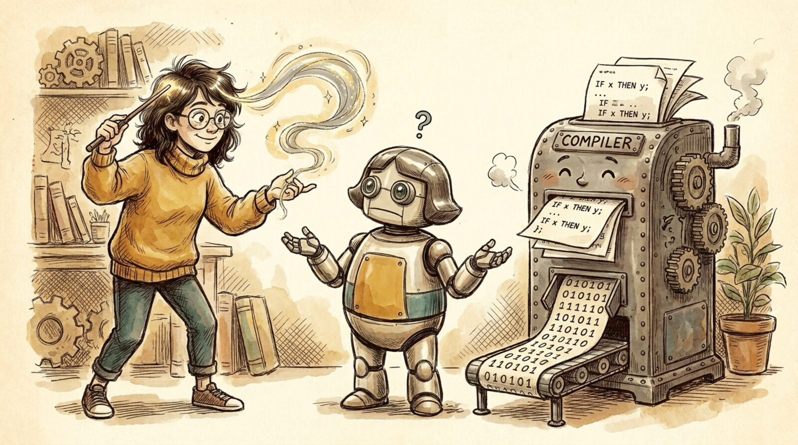

<section id="r04" data-transition="fade" style="background:#F5EEE0;color:#222222;font-family:Arial, Helvetica, sans-serif;padding:0;display:flex;flex-direction:column">

<aside>It's not a compiler. Writing code is easy; code that never regresses is not. A compiler is correct-by-construction over logic; we feed it fuzzy intent, so output is nondeterministic.</aside>
</section>
